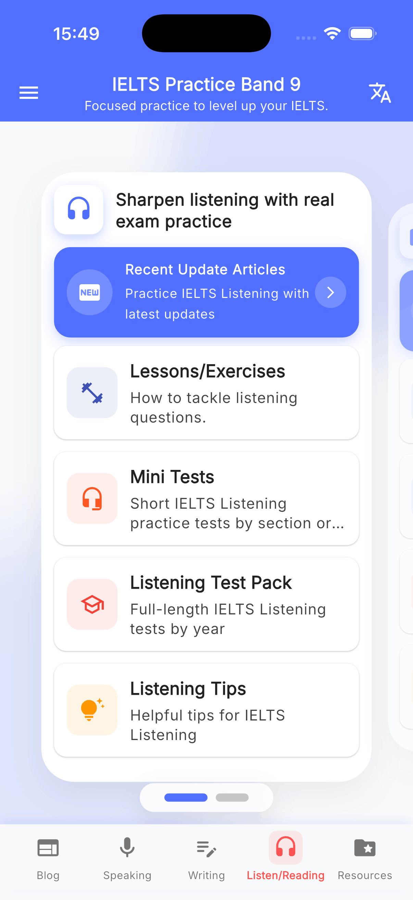
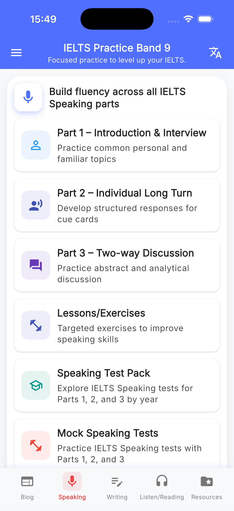
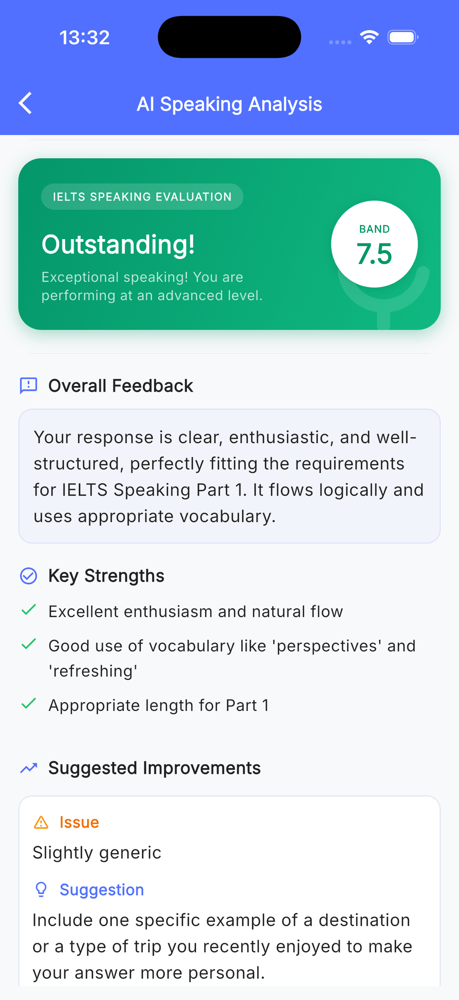
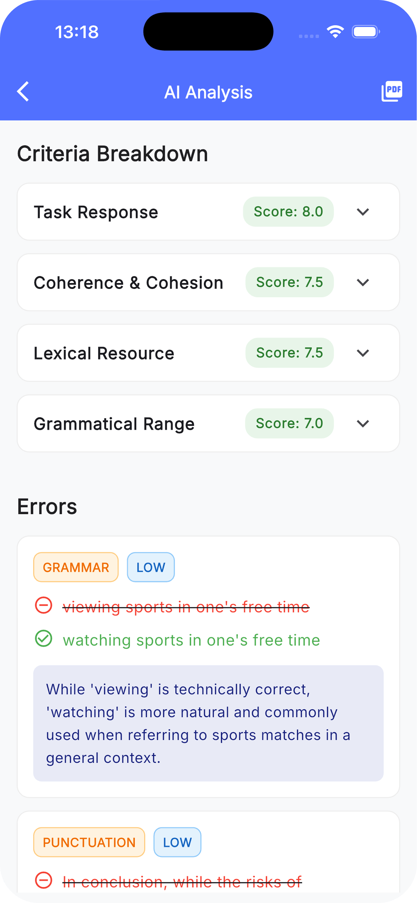

AI instant feedback
Get IELTS Writing essays and Speaking answers evaluated with detailed band descriptors and corrections.
Mobile IELTS prep for focused daily practice
Practice all 4 skills, review sample answers, and get AI instant feedback on Writing essays and Speaking answers inside one app built for exam preparation.
Chosen by learners building consistent IELTS study habits.
Strong user feedback across mobile app store audiences.
Listening, Reading, Writing, and Speaking in one study flow.


Train listening, reading, writing, and speaking without switching between different tools.
Get Writing and Speaking answers evaluated quickly with band descriptors and correction notes.
Keep a daily rhythm with mobile-friendly lessons you can finish on breaks, commutes, or evenings.
AI Instant Feedback
Submit IELTS Writing essays or Speaking answers and receive detailed band descriptor feedback, corrections, and practical improvement notes while the task is still fresh.
Review your response immediately after practice.
Understand score signals for IELTS criteria.
See what to fix before repeating the task.


Everything you need in one app
From audio practice to sample essays, speaking prompts, and AI feedback, the app helps you stay inside a single preparation workflow.
Get IELTS Writing essays and Speaking answers evaluated with detailed band descriptors and corrections.
Work through exam-style audio with transcripts to sharpen detail recognition and speed.
Train comprehension with Academic and General passages built around IELTS-style question patterns.
Review sample essays, structures, and strategies that make writing practice more deliberate.
Use cue cards, common topics, and rehearsal prompts to prepare stronger spoken responses.
Stay close to fresh tips, study content, and reminders that help maintain exam momentum.
Open lessons, examples, and support materials quickly when you need a fast revision pass.
Simple weekly rhythm
Use the app to rotate skills, revisit weak areas, and keep revision compact enough to sustain over weeks, not just a few days.
Pick listening, reading, writing, or speaking based on your most urgent gap.
Review transcripts, sample answers, and guidance before repeating the task.
Keep progress moving with practice sessions that fit around work or school.
Ready to practice?